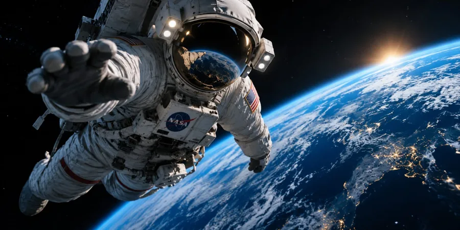
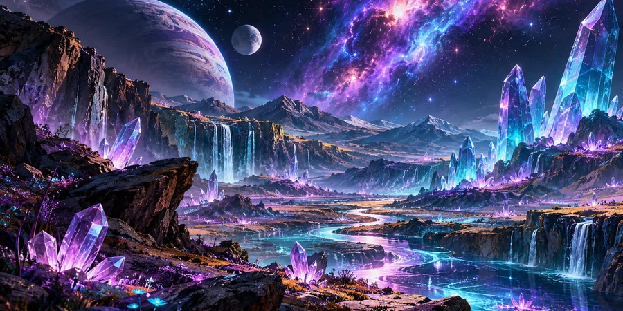

Space Fire History
Lessons from the Apollo 1 pure oxygen fire, Apollo 13 explosion, and the 1997 Mir oxygen generator failure.
Browse NASA PSI combustion investigations and
historical references to explore the science of spacecraft fire safety.
Pick an environment, a habitat and a safety goal. NASA PSI combustion investigations are re-ranked with a transparent score.
Score = habitat relevance (1–5 × 4) + goal match (+6, or +2 per goal when “All”) + oxygen-sensitivity boost for the selected environment (Moon +3, Pure O₂ +5). Relevance weights are team-assigned editorial judgments, not NASA values. Every citation links straight to its NASA source. Investigation list: NASA PSI.

Lessons from the Apollo 1 pure oxygen fire, Apollo 13 explosion, and the 1997 Mir oxygen generator failure.

NASA Space Shuttle smoke detectors were adapted for mining operations, drastically reducing false alarms.
Try a different search or select another category.